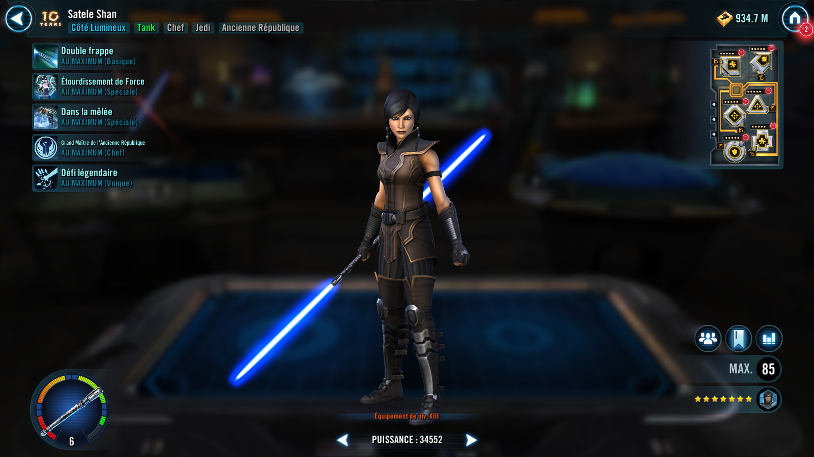

Satele Shan
The Grand Master of the Jedi Order, fearlessly shields her allies
The Grand Master of the Jedi Order, fearlessly shields her allies

Deal Physical damage to target enemy twice. If Satele is Taunting, deal 20% more damage and inflict Buff Immunity for 1 turn. If the target enemy is Marked, deal an additional 20% damage and inflict Healing Immunity for 1 turn.
Satele gains Protection Up (10%, stacking) until the end of battle.
Deal Physical damage to target enemy and Stun them for 2 turns. Satele Taunts for 2 turns, which can't be dispelled. If both Jedi Knight Revan and Bastila Shan are allies, this Stun can't be evaded or resisted. If the target enemy is already Stunned, remove 100% of their Turn Meter, which can't be resisted.
If target enemy is Marked, all Old Republic Jedi allies gain 100% Defense Penetration and Offense (stacking) for 2 turns.
If Satele has Defense Up and Tenacity Up, she dispels them and gains Perfect Defense for 2 turns, which can't be copied, dispelled, or prevented.
If there are no allied Galactic Legends, all Jedi allies gain a stack of Jedi Lessons for 3 turns (max 3 stacks), which can't be copied, dispelled, or prevented. All Old Republic allies also gain Fearless for 2 turns, which can't be copied, dispelled, or prevented.
Dispel all buffs on all enemies. Deal Physical damage to target enemy.
Daze all enemies for 2 turns and reduce their Tenacity by 10% (stacking) until the end of battle.
If all allies are Old Republic:
- Deal True damage equal to 20% of Satele Shan's Max Protection to all enemies
- Jedi allies recover Protection equal to 50% of Satele's Max Protection
- Attacker allies gain Jedi's Will for 2 turns, which can't be dispelled or prevented
- Satele gains Defense Up and Tenacity Up for 2 turns
Omicron Boost : While in Grand Arenas: Enemies that are not Dazed at the end of this turn lose 10% Max Health (stacking), and if all allies are Old Republic, Satele gains that much Max Protection (stacking) until the end of battle.
Old Republic allies have +50% Max Protection and Offense, doubled for Old Republic Jedi allies. Whenever a Marked enemy damages an Old Republic ally, that ally recovers Protection equal to the damage received at the end of their turn.
While Satele is Taunting, whenever another Old Republic ally is damaged, that ally gains High Morale for 3 turns.
Whenever Old Republic allies attack out of turn, they reduce their cooldowns by 1. If the target enemy is Marked, reduce their cooldowns by 2 instead.
Whenever an enemy resists a debuff from Old Republic allies, inflict Tenacity Down on them for 2 turns. Whenever an enemy is inflicted with a debuff from Old Republic allies, also inflict Speed Down on them for 2 turns (once per turn). While Old Republic allies have Fearless, they are immune to Doubt.
Old Republic Jedi allies with Legendary Battle Meditation are immune to Daze. While Satele is active, whenever an Old Republic Jedi ally ends their turn and if no other allies have Legendary Battle Meditation, allied Bastila Shan takes a bonus turn.
Omicron Boost : While in Grand Arenas: Whenever an Old Republic Jedi ally attacks out of turn, they deal bonus True damage based on Satele's Max Protection. If all allies are Old Republic: all allies are immune to Stun, they take reduced damage from Percentage Health damage effects, and, at the start of battle, they gain Fearless and Instant Defeat Immunity for 2 turns.
Whenever a Marked enemy starts their turn, Satele Taunts for 1 turn. Whenever an ally reaches 75% Health, Satele Taunts for 1 turn.
If all allies are Old Republic:
- While Satele is Taunting, she gains Protection Up (20%, stacking) for 2 turns whenever she is damaged, all enemies are immune to bonus Turn Meter gain, and they can't assist if they are targeting allies
- While Satele has Protection, her Health can't drop below 100%, and she can't be instantly defeated
- The first time Satele would be reduced to 25% Health, she recovers 100% Health and Protection, and if Jedi Knight Revan is an ally, he also gets this benefit
Omicron Boost : While in Grand Arenas: Whenever an Old Republic ally with less than 20% Health is damaged, they equalize their Health with the strongest enemy. If all allies were Old Republic at the start of battle, their revives can't be prevented. This effect persists through defeat.